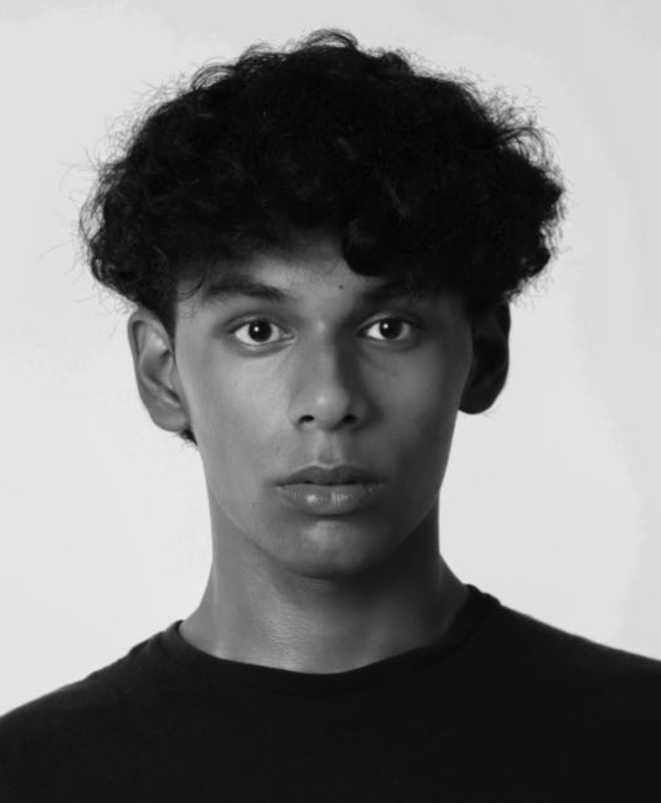

I am a multidisciplinary creative, working across wildlife photography, fashion, and spatial design moving seamlessly between the rawness of nature and the precision of constructed environments. As a stylist and creative director, I shape narratives with intention; as a freelance fashion photographer and exhibition set designer, I build immersive visual worlds; and as a fashion model, I understand the power of presence within the frame. My work is defined by depth, detail, and distinction explore my portfolio to experience the vision.
